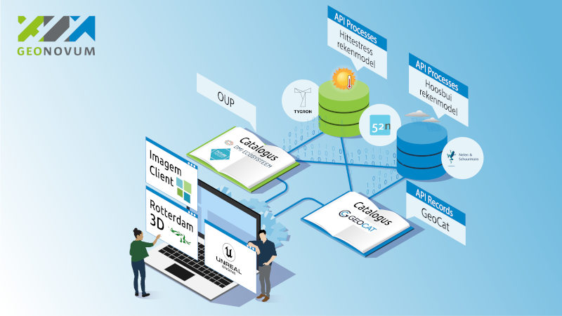
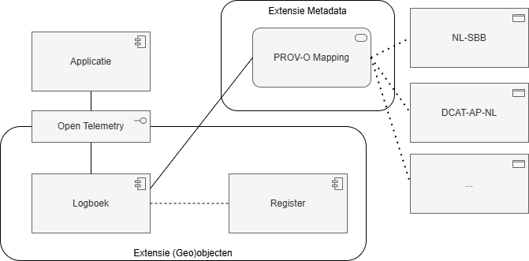
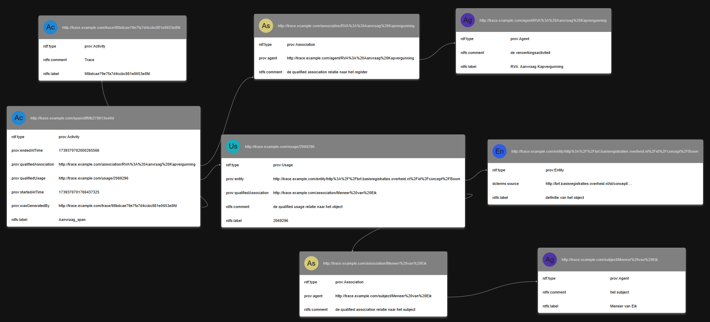
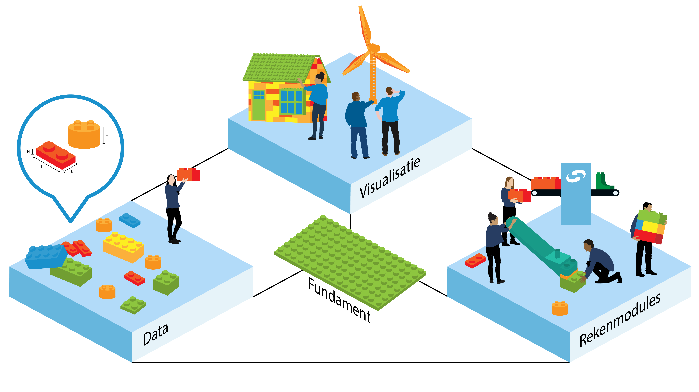
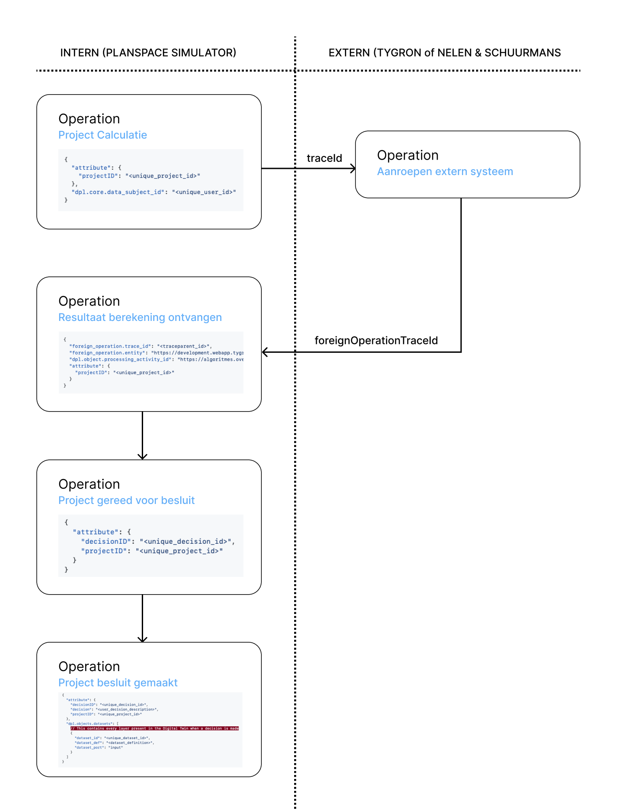
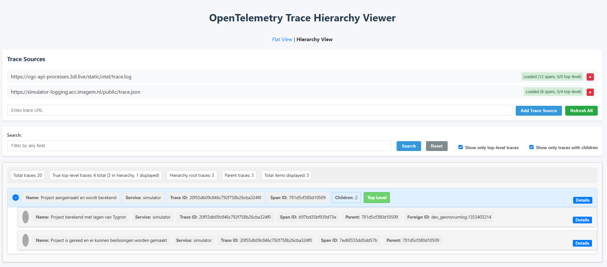

De overheid wil voor burgers en bedrijven zo transparant mogelijk zijn in de omgang met hun gegevens. Daarom is het bij de informatieverwerking in datasets belangrijk om voor elke mutatie of raadpleging vast te leggen wie deze actie wanneer uitvoert, en waarom. Deze herleidbaarheid speelt zowel een rol in het kader van de wetgeving op het gebied van privacy als ook het streven naar openheid en transparantie bij de overheid. Voor een optimale samenwerking over organisaties en bronnen heen is voor deze logging een algemene standaard nodig.
Het project Logboek Dataverwerkingen (voorheen: Verwerkingenlogging) maakt deel uit van het actieplan Data bij de Bron en onderzoekt met Digilab in samenwerking met diverse overheidspartijen (ministeries, uitvoeringsorganisaties en gemeentes) of we op basis van de tot nu toe opgedane inzichten een overheidsbrede standaard kunnen vaststellen.
Aanvullend op de standaard onderzoeken we in deze handreiking welke kansen en uitdagingen er liggen in het toepassen van deze standaard op het loggen van (geo)objecten.
In de kern is de standaard zo generiek gehouden dat deze zeker toe te passen is op het loggen van (geo)objecten. Bij het uitwerken van scenario's van die toepassing komt wel naar boven dat het 'ecosysteem' van digitale tweelingen andere karakteristieken kent dan de scenario's waarin de standaard tot nu toe is beproefd. Dit heeft onder meer te maken met het meer dynamisch gebruik van verschillende bouwblokken (algoritmen) om tot beleidsinzichten te komen.
Verwijzingen
De standaard Logboek dataverwerkingen (LDV) bestaat uit de volgende documenten:
BZK heeft op basis van een aanvraag in samenwerking met Geonovum innovatiebudget toegewezen gekregen voor het onderwerp 'Standaard voor transparantie besluitvorming ' (IDO240584K). Het belang dat de overheid verantwoording en transparantie biedt aan burgers en bedrijven over hoe zij handelt, is groot. Burgers en bedrijven dienen op de hoogte te zijn van de gebruikte gegevens en besluitvormingsprocessen van de overheid. Hiervoor worden niet alleen persoonsgegevens maar bijvoorbeeld ook data over objecten uit de fysieke leefomgeving gebruikt. Het ministerie van Binnenlandse Zaken en Koninkrijksrelaties directie digitale overheid (regievoerder) heeft aan Geonovum gevraagd hierin ondersteuning te bieden en een offerte uit te brengen voor het uitbreiden voor het Logboek Dataverwerking.
1.1 De opdracht, het resultaat en te bereiken effect
Het probleem dat BZK en Geonovum signaleren is dat het steeds lastiger maar ook steeds belangrijker wordt om aan te geven welke gegevens op welke manier worden gebruikt door de overheid, bijvoorbeeld bij het nemen van besluiten of formuleren van beleid. BZK ziet namelijk dat de informatievoorziening van de overheid steeds meer toe gaat naar een federatieve opzet waarbij meerdere bronnen van verschillende overheidsorganisaties gecombineerd worden om informatievragen te beantwoorden of om besluiten te nemen over een aanvraag van een burger. Daarbij is het heel belangrijk om verantwoording af te kunnen leggen hoe een antwoord op een informatievraag of een besluit tot stand is gekomen. Dit verhoogt de transparantie in het handelen van de overheid. De conceptstandaard voor loggen van verwerkingen (Logboek Dataverwerkingen) is daar een belangrijke bouwsteen in.
We willen deze standaard beproeven bij het loggen van transacties met (geo)objecten, in hoeverre is de standaard daar toereikend voor en welke aanvullende aandachtspunten komen er naar voren. Verder willen we onderzoeken hoe de verbinding tussen de Standaard Logboek dataverwerkingen en semantische standaarden zoals NL-SBB en DCAT-AP-NL gelegd kan worden.
De standaard Logboek dataverwerkingen gaat over het verantwoorden van het gebruik van informatie door de overheid. Hierbij moeten er keuzes gemaakt worden wat er wel en niet vastgelegd wordt. Het is immers in de praktijk niet haalbaar om elke individuele transactie of bevraging vast te leggen en daar nog waardevolle inzichten uit te kunnen halen. Deze 'implementatierichtlijnen' vallen buiten de scope van de standaard zelf. Hierdoor kan de standaard in principe heel breed ingezet worden.
2.1 Huidige situatie
De standaard Logboek dataverwerkingen [LDV] beschrijft als werkingsgebied:
Functioneel toepassingsgebied: De standaard Logboek Dataverwerkingen moet worden toegepast als persoonsgegevens worden verwerkt ten behoeve van het ontsluiten van overheidsinformatie en/of functionaliteit.
Dit kan beschouwd worden als een 'minimaal verplichte' scope.
De standaard is echter zo generiek opgesteld dat deze breder toegepast kan worden.
2.2 Gewenste situatie
Bij de bredere toepassing van de standaard voor het loggen van (geo)objecten dienen zich een aantal aanvullende vragen aan. De uitwerking in dit document probeert antwoorden te geven op die aanvullende vragen.
Een van de vragen betreft het bepalen vanuit welk beleidskader het loggen van dataverwerkingen uitgevoerd wordt. De primaire scope van de standaard richt zich op het register van verwerkingsactiviteiten in het kader van de AVG. Bij het uitbreiden van de scope is het van belang te bepalen bij welke registers nog meer het loggen van dataverwerkingen als instrument ingezet kan worden. Voor dit onderzoek kiezen we voor het Algoritmeregister als kader om te bepalen of een verwerking gelogd moet worden of niet. De gedachte hierachter is dat het waardevol is om niet alleen te weten dat een algoritme ingezet wordt in een bepaalde beleidscontext, maar ook wanneer en op welke data dit algoritme dan is toegepast.
Met de uitbreiding van de scope van de te loggen verwerkingen wordt de semantische duiding van de verwerking en het object waar de verwerking op van toepassing is belangrijker. Daar waar de scope van een persoonsgegeven redelijk eenduidig is, kan de scope van een gelogd objectgegeven zeer divers zijn. Het kan gaan om een object uit een van de basisregistraties, maar ook een object uit een geheel andere dataset.
Daarom is het voor het loggen van (geo)objectgegevens extra interessant om een uitbreiding op de standaard te realiseren die specificeert op welke manier het objectgegeven geinterpreteerd moet worden. Voor deze uitbreiding denken we dat het meerwaarde heeft om de gegevens te kunnen definieren in termen van de PROV-O standaard. Vanuit deze mapping is een verbinding naar bijvoorbeeld de [NL_SBB] of de [DCAT_AP_NL] standaard interessant.
De logboek dataverwerking standaard kan gepositioneerd worden in de GDI Gegevensuitwisseling als standaard waarin een 'Uitwisselingsafspraak' geformaliseerd wordt. Waarbij de daadwerkelijke logging betrekking heeft op de 'Operatie'.
In het kader van het NORA Nationaal Semantisch Vlak kan de logboek dataverwerking standaard gepositioneerd worden als het vastleggen van een gebeurtenis die betrekking heeft op een informatieobject.
2.4 Aandachtsgebieden
De voorlopige conclusie is dat de kern van de standaard zodanig generiek is dat deze in principe ook toegepast kan worden voor het loggen van (geo)objecten.
De aandachtspunten liggen vooral in de te maken keuzes in de implementatie of het uitbreiden met een extensie voor inzage.
Noot
2.4.1 Implementatie keuzes
Voor dit onderzoek kiezen we ervoor om de standaard te beproeven met een implementatie in een Digitale Tweeling.
Bij het onderzoek naar het implementeren van de Logboek dataverwerkingen standaard speelt de dynamiek van het digitale tweelingen ecosysteem een grote rol. In de beoogde architectuur ontstaat er een catalogus (of 'appstore') van rekenmodellen die een gebruiker naar behoefte kan inzetten. Het is vooraf dus nog niet duidelijk welke organisatie welk aangeboden rekenmodel gaat inzetten voor het analyseren van een bepaald beleidsvraagstuk. De verwerkingsketen is daarmee op voorhand nog niet bekend en er is een scheiding van de verantwoordelijke organisatie en de aanbieder van het rekenmodel. Dit brengt implementatievraagstukken met zich mee waar we meer inzicht in willen krijgen.

Illustratieve indicatie van de verschillende bouwblokken in een digitale tweelingen ecosysteem. bron: Geonovum
2.4.2 Afwegingskader
In de kern van de standaard wordt een Register gedefinieerd. Als de standaard toegepast wordt voor het loggen van persoonsgegevens wordt hier het Register van Verwerkingsactiviteiten in het kader van de AVG voor gebruikt. Voor het bepalen of een dataverwerking van een objectgegeven gelogd moet worden gaan wij in dit onderzoek uit van het Algoritmeregister als afwegingskader.
Noot
2.4.3 Volwassenheidsniveaus
Een ander aandachtspunt bij het beschrijven van de functionaliteit voor het loggen van objectgegevens betreft de volwassenheidsniveaus. Logging kan op verschillende Volwassenheidsniveaus: hoe hoger het volwassenheidsniveau, hoe meer data er wordt gelogd.
Welk volwassenheidsniveau gebruikt wordt hangt van meerdere factoren af. De informatiebehoefte van de verantwoording, maar zeker ook wat er technisch gezien mogelijk is om te implementeren.
De volgende niveaus worden gehanteerd:
Niveau 1: registerverwijzing
Niveau 2: kolomverwijzing
Niveau 3: concrete data
Zie Volwassenheidsniveaus in de Logboek dataverwerkingen standaard voor de verdere toelichting hierop.
2.5 Extensies
In de standaard wordt de basisfunctionaliteit beschreven, en wordt een extensie aanpak beschreven om de standaard uit te breiden.

postionering extensies
2.5.1 Extensie (geo)objecten
dpl.core.processing_activity_id is gereserveerd voor het verwijzen naar een verwerkingsregister in het kader van de AVG en dpl.core.data_subject_id is gereserveerd voor het verwijzen naar een persoonsgegeven.
Voor het loggen van (geo)objectgegevens definieren we de volgende extensie:
dpl.objects
De uitwerking van de te gebruiken attributes in deze namespace staat in hoofdstuk 3
2.5.2 Extensie Metadata
Om de interoperabiliteit tussen de standaard Logboek dataverwerkingen en andere systemen te verbeteren kijken we naar de mapping van het gebruikte model (op basis van open telemetry) naar [PROV-O]. [PROV-O] wordt op diverse plaatsen, zowel nationaal als internationaal gebruikt om 'provenance' vast te leggen.
Behalve naar [PROV-O] onderzoeken we ook de relatie naar de [NL_SBB] standaard, deze standaard voor het beschrijven van begrippen, wordt samen met [DCAT_AP_NL] bijvoorbeeld ingezet in het Federatief Datastelsel om metadata te beschrijven.
Het loggen van (geo)objecten is een bijzonder ruim en daarmee flexibel onderwerp. Er zijn zeer veel mogelijke scenario's, afhankelijk van de gebruikte data,
het type analyse of algoritme en het gewenste volwassenheidsniveau.
We nemen een paar uitgangspunten op om de scope te verduidelijken.
Noot
Input/output poorten conform het idee van 'Dataproducten' als uitgangspunt voor de afbakening van het proces wat wordt gelogd.
API specificatie van een proces (als het goed is gelijk aan 1.)
In de Logboek dataverwerkingen standaard wordt de OTLP standaard aanbevolen om de interface
naar het logboek mee te implementeren.
De OTLP standaard kent een aantal categorieën om telemetrie vast te leggen. Voor de Logboek dataverwerkingen standaard wordt de traces categorie gebruikt.
Op het 'hoogste' niveau kent de standaard ook nog het concept resource.
Bij het opzetten van een logboek dataverwerkingen interface kan er dus informatie op het niveau van resource vastgelegd worden. Dit is typisch informatie over het systeem waar de betreffende logging vandaan komt.
De traces zijn vervolgens de individuele verwerkingen die door het betreffende systeem gedaan worden.
resource
service.name = Logical name of the service
service.instance.id = The string ID of the service instance
Overeenkomstig de Opentelemetry specificatie.
Elk individueel Dataproduct/proces krijgt een eigen naam en id. Dus als er meerdere algoritmes/processen op een server zijn geimplementeerd moet de service.name op het niveau van
het individuele product/proces geinstantieerd worden.
trace
Voor het loggen van gegevens binnen een trace maken we gebruik van het idee van 'Dataproducten' zoals die in de [DPROD] ontologie gepositioneerd worden.
Definitie van een Dataproduct volgens [DPROD]:
A rational, managed, and governed collection of data, with purpose, value and ownership, meeting consumer needs over a planned life-cycle. A data product may have input and output ports, code and metadata.
Open Data Mesh beschrijft een dataproduct als:
It's the smallest unit that can be independently deployed and managed in a data architecture (i.e. architectural quantum). It is composed of all the structural components that it requires to do its function: the metadata, the data, the code, the policies that govern the data and its dependencies on infrastructure.
Dit sluit goed aan op het abstractieniveau van wat we willen loggen met Logboek Dataverwerkingen. De beschreven structuur hieronder legt deze structurele componenten vast.
Afhankelijk van het gekozen niveau wordt er alleen gelogd op het niveau van het Dataproduct (niveau 1), Op het niveau van de datasets (of tabellen) en eventueel de features (rijen in de tabellen) (niveau 2), of zelfs de attributen en de waarden binnen de features (niveau 3).
verwijzing naar het register van het betreffende algoritme. uri naar uniek identificeerbaar algoritme
dpl.objects.dataproduct_id
1
uri naar een catalogus met de dataproduct metadata
dpl.objects.dataset
2a
lijst met datasets (input en/of output van het dataproduct)
dataset_id
2a
unieke id van de dataset
dataset_def
2a
uri naar de definitie/metadata van de dataset (catalog_record/dcat_ap_nl)
dataset_port
2a
input/output dataset, dit wordt in de log vastgelegd omdat het niet noodzakelijk uit de metadata in de catalogus afgeleid kan worden
feature
2b
lijst met features:
feature_id
2b
unieke id van het feature
feature_def
2b
uri naar een definitie van het feature
feature_port
2b
input/output feature, dit wordt in de log vastgelegd omdat het niet noodzakelijk uit de metadata in de catalogus afgeleid kan worden
feature_attribute
3
lijst van attributen van het feature
attribute_name
3
unieke identifier van het attribuut
attribute_value
3
waarde van het attribuut in de specifieke verwerking / logregel
attribute_def
3
verwijzing naar de metadata van het attribuut
Afhankelijk van het volwassenheidsniveau wordt er meer gelogd. Voor de hogere niveaus geldt dat de gegevens van het lagere niveau ook gelogd worden.
Voor niveau 2 (kolomniveau) geldt dat er op gehele dataset gelogd kan worden (2a), of dat er specifiek aangegeven kan worden welke features in een dataset gebruikt zijn (2b).
4. Mapping PROV-O Conceptueel model
Dit onderdeel is niet-normatief.
De kern van het [PROV_O] model bestaat uit een Activiteit, een Entiteit en een Agent.
Om een goede mapping te kunnen maken tussen de standaard Logboek dataverwerkingen en PROV-O volstaat het kernmodel niet. We kijken daarom naar de complete ontologie om alle constructies goed te kunnen mappen.
De basis van de standaard kent het Logboek (met de interface beschrijving), de Applicatie die naar het Logboek schrijft en het Register waarnaar verwezen wordt ter verantwoording van de verwerkingsactiviteit.
Het Logboek is in essentie een lijst van (PROV-O) Activiteiten. Het resultaat van die activiteit (oftewel de PROV-O Entity) is de gewijzigde data in de applicatie. Een PROV-O Agent is hier zowel de betrokkene, of het object waar de datawijziging over gaat, en de actor die de wijziging doorvoert.
Zowel Agent als Entity komen daarmee niet rechtstreeks in het kernmodel van het logboek voor.
Als we een laag dieper kijken naar de interface beschrijving vinden we daar echter wel aanknopingspunten voor een verdere mapping.
4.1 Logboek Interface (Normatieve standaard)
Een van de gedefinieerde attributen is het veld `resource`.
Dit is een bericht, opgebouwd uit het volgende veld:
- `attributes`: Lijst attributen in de vorm van *KeyValue pairs*.
De organisatie kan deze lijst gebruiken om een systeem,
applicatie of component aan te duiden op een manier die binnen de
organisatie gebruikelijk is.
Dit zijn bijvoorbeeld naam en versienummer van een applicatie,
of een verwijzing naar een record in een CMDB.
Het veld `attributes` is een lijst van *key-value pairs*,
in een namespace met prefix `dpl.` (data processing log).
De volgende attributen zijn mogelijk in de namespace `core`:
- `dpl.core.processing_activity_id`: URI; Verwijzing naar Register
met meer informatie over de Verwerkingsactiviteit
- `dpl.core.data_subject_id`: Unieke identificerende code van de Betrokkene; versleuteld.
Hiermee wordt aangeduid welke persoon Betrokkene is bij de verwerking, gelet op de AVG.
- `dpl.core.data_subject_id_type`: Type van het veld data_subject_id.
Dit is bijvoorbeeld BSN, Personeelsnummer of Vreemdelingennummer,
of een URI naar een Register waar het veld meer precies wordt geduid.
In de attributes zien we dus de constructie om te verwijzen naar het register via dpl.core.processing_activity_id. En we zien met dpl.core.data_subject_id een constructie om te verwijzen naar het subject van de verwerking, en met dpl.core.data_subject_id_type een nadere duiding van het soort subject.
Via een prov:qualifiedUsage relatie kan een Activiteit (dus een regel in het Logboek) gerelateerd worden aan een verwerkingsactiviteit in het Register.
De mapping van het technisch (opentemetry) model van de standaard Logboek dataverwerkingen naar PROV-O maakt het vervolgens makkelijker om de loggegevens interoperabel te maken met andere systemn.
4.2 Logboek Interface (objecten)
Net zoals de core standaard attributen definieert in de dpl.core namespace, definieren we attributen voor (geo)objecten in de dpl.objects namespace.
Deze mapping is niet op dezelfde wijze te doen omdat we in de logging niet een individueel aanwijsbaar object vastleggen maar een lijst met objecten.
optie: onderzoeken of het waardevol is een mapping naar MLDCAT-AP te doen.
optie: onderzoeken of het waardevol is een mapping naar [DPROD], Data Product Ontology te doen.
4.3 voorbeeld uitwerking
Onderstaand een voorbeeld van een log vanuit opentelemetry:
In de Git repository zijn de voorbeeld RML transformatie file, de input json en de output ttl te vinden om bovenstaande log om te zetten naar RDF conform de PROV-O ontologie.
Deze trace zou er in RDF als volgt uit kunnen zien:
@prefixdcterms:<http://purl.org/dc/terms/> .
@prefixprov:<http://www.w3.org/ns/prov#> .
@prefixrdfs:<http://www.w3.org/2000/01/rdf-schema#> .
<http://trace.example.com/span/dff0fb279813ee0d>aprov:Activity ;
rdfs:label"Aanvraag_span" ;
prov:endedAtTime"1739370702000265566" ;
prov:qualifiedAssociation<http://trace.example.com/association/RVA%3A%20Aanvraag%20Kapvergunning> ;
prov:qualifiedUsage<http://trace.example.com/usage/2069296> ;
prov:startedAtTime"1739370701786437325" ;
prov:wasGeneratedBy<http://trace.example.com/trace/98bdcae79e7fa7d4ccbc981e0653e8fd> .
<http://trace.example.com/agent/RVA%3A%20Aanvraag%20Kapvergunning>aprov:Agent ;
rdfs:label"RVA: Aanvraag Kapvergunning" ;
rdfs:comment"de verwerkingsactiviteit" .
<http://trace.example.com/association/Meneer%20van%20Eik>aprov:Association ;
rdfs:comment"de qualified association relatie naar het subject" ;
prov:agent<http://trace.example.com/subject/Meneer%20van%20Eik> .
<http://trace.example.com/association/RVA%3A%20Aanvraag%20Kapvergunning>aprov:Association ;
rdfs:comment"de qualified association relatie naar het register" ;
prov:agent<http://trace.example.com/agent/RVA%3A%20Aanvraag%20Kapvergunning> .
<http://trace.example.com/entity/http%3A%2F%2Fbrt.basisregistraties.overheid.nl%2Fid%2Fconcept%2FBoom>aprov:Entity ;
rdfs:label"definitie van het object" ;
dcterms:source"http://brt.basisregistraties.overheid.nl/id/concept/Boom" .
<http://trace.example.com/subject/Meneer%20van%20Eik>aprov:Agent ;
rdfs:label"Meneer van Eik" ;
rdfs:comment"het subject" .
<http://trace.example.com/trace/98bdcae79e7fa7d4ccbc981e0653e8fd>aprov:Activity ;
rdfs:label"98bdcae79e7fa7d4ccbc981e0653e8fd" ;
rdfs:comment"Trace" .
<http://trace.example.com/usage/2069296>aprov:Usage ;
rdfs:label"2069296" ;
rdfs:comment"de qualified usage relatie naar het object" ;
prov:entity<http://trace.example.com/entity/http%3A%2F%2Fbrt.basisregistraties.overheid.nl%2Fid%2Fconcept%2FBoom> ;
prov:qualifiedAssociation<http://trace.example.com/association/Meneer%20van%20Eik> .

5. Implementaties
Dit onderdeel is niet-normatief.
5.1 MVP met pygeoapi
In de github repository staat een Minimal Viable Product (MVP) waarin
gedemonstreerd wordt hoe het opentelemetry protocol geimplementeerd kan worden in een OGC API Processes functie.
Use-cases volwassenheidsniveaus
Om de eigenschappen voor de (geo)objecten extensie goed uit te werken helpt het om te kijken naar een aantal voorbeelden en wat er dan gewenst is om vast te leggen.
5.1.1 Remote Sensing gebiedsclassificatie op basis van AI beeldherkenning
Dit is een voorbeeld waarbij een organisatie remote sensing beelden met AI Beeldherkenning verwerkt om gebieden te classificeren. Bijvoorbeeld om natuurgebieden te bepalen.
In dit geval is er niet direct een betrokkene aan te wijzen (uiteindelijk heeft het gebied natuurlijk wel een eigenaar, maar de gegevens over de eigenaar worden niet direct gebruikt bij de classificatie van het gebied).
Het is wel van belang om vast te leggen met welke batch remote sensing beelden deze analyse is uitgevoerd en welk algoritme gebruikt is. Beeldkwaliteit door bijvoorbeeld bewolking of
een defect aan een sensor kunnen de classificatie beinvloed hebben en dan wil je weten voor welke gebieden dit gevolgen heeft gehad.
Dit kan als Niveau 2: 'kolomverwijzing' beschouwd worden. Met dien verstande dat er verwezen wordt naar het type remote sensing data (bv Sentinel-2, LIDAR) en niet de gebruikte beeldwaarden
van de remote sensing beelden. Er dient wel metadata van het gebruikte dataproduct vastgelegd te worden (timestamp, series) of een identifier die het specifieke dataproduct uniek identificeert.
Dit is een voorbeeld van het verwerken van satellietbeelden om te signaleren of graslanden worden gemaaid tijdens het broedseizoen van beschermde vogelsoorten.
Dit toezicht is van belang in verband met subsidieverstrekking voor natuurvriendelijk beheer. In deze analyse worden zowel remote sensingbeelden gebruikt als percelen.
Het resultaat van de analyse heeft een direct gevolg voor de eigenaar (betrokkene) van het perceel. (los van het feit dat er in de implementatie van het algoritme wel een menselijke check plaatsvindt)
Afhankelijk van de implementatie kan het ook nog zo zijn dat de analyse van de percelen zodanig gedaan wordt dat hier een betrokkene nog niet rechtstreeks te achterhalen is.
Dit kan als Niveau 2: 'kolomverwijzing' gelogd worden, maar zou ook als Niveau 3: 'concrete data' geimplementeerd kunnen worden.
Niveau 2:
dpl.core.processing_activity_id (verwijzing naar de subsidieverlening)
dpl.core.data_subject_id (indien bekend in de verwerking van percelen)
dpl.objects.algorithm_id (verwijzing naar het algoritmeregister)
dpl.objects.dataproduct_id
dpl.objects.dataset[
dataset_id
dataset_def
dataset_port
]
Niveau 3:
dpl.core.processing_activity_id (verwijzing naar de subsidieverlening)
dpl.core.data_subject_id (indien bekend in de verwerking van percelen)
dpl.objects.algorithm_id (verwijzing naar het algoritmeregister)
dpl.objects.dataproduct_id
dpl.objects.dataset[
dataset_id
dataset_def
dataset_port
feature [
feature_id
feature_def
feature_attribute [
attribute_name
attribute_value
attribute_def
]
]
]
5.1.3 Aanvraag kapvergunning
Dit is een (fictief) voorbeeld waar een betrokkene een aanvraag voor een kapvergunning indient. Hierbij moet beoordeeld worden of de betreffende boom gekapt mag worden, of bijvoorbeeld een monumentale status heeft.
In dit geval is er zowel een betrokkene en een activiteit in het register van verwerkingsactiviteiten, als een aanwijsbaar object (de boom).
Dit kan zowel als Niveau 2: 'kolomverwijzing', maar ook als Niveau 3: 'concrete data' gelogd worden. Waarbij het mogelijk wel voor de hand ligt om Niveau 3 te kiezen omdat de boom direct aanwijsbaar is.
Niveau 3:
dpl.core.processing_activity_id (verwijzing naar de subsidieverlening)
dpl.core.data_subject_id (indien bekend in de verwerking van percelen)
dpl.objects.algorithm_id (verwijzing naar het algoritmeregister)
dpl.objects.dataproduct_id
dpl.objects.dataset [
dataset_id
dataset_def
dataset_port
feature [
feature_id
feature_def
feature_port
feature_attribute [
attribute_name
attribute_value
attribute_def
]
]
]
5.2 Implementatie in Digitale Tweelingen Tooling
Naast het MVP voorbeeld en de use-cases ter verdieping van de requirements voor de extensie doen we ook een beproeving in de implementatie in Digitale Tweeling systemen.
Deze beproeving dient vooral om de context zoals die in 2.4.1 is beschreven beter te begrijpen.
5.2.1 Vraagstukken
Kunnen we de logging standaard implementeren in de tooling van de leveranciers
Kunnen we met de aanroep van API's tussen de systemen ook de tracecontext meegeven zodat logs aan elkaar te relateren zijn
Kunnen we de rekenmodellen die in de systemen gebruikt worden goed genoeg vastleggen in het algoritmeregister en kunnen we daar dan naar verwijzen
5.2.2 uitgewerkte scenarios
De scenarios worden geplaatst in de context van de NLDT architectuur.
Deze architectuur kent een basispatroon zoals getoond in de volgende afbeelding:

5.2.2.1 Imagem
De Planspace Simulator software van Imagem wordt hier gebruikt als visualisatie component, waarbij rekenmodules van Nelen & Schuurmans, en Tygron worden aangeroepen.
In de user interface van Imagem wordt een knop getoond waarmee een 'besluit' vastgelegd kan worden. De stappen om dit besluit vast te leggen bestaan uit het laden van de relevante data lagen, het aanroepen van een rekenmodel, het tonen van het resultaat van het rekenmodel en het vastleggen van de conclusie die uit de resultaten getrokken worden.

Er wordt dus een logfile aangelegd waarbij de verschillende stappen als 'spans' vastgelegd worden. De aanroep van het rekenmodel initieert het aanleggen van een logfile op het platform van het rekenmodel, waarbij de tracecontext meegegeven wordt om de losse logfiles in een later stadium aan elkaar te kunnen relateren.
Een voorbeeld van de log zoals deze door Imagem is vastgelegd is hier te vinden.
Er zijn hierbij 2 verschillende implementaties gedaan:
De aanroep van het hittestress model van Tygron wordt synchroon gedaan (het visualisatie platform 'wacht op antwoord' en doet niets in de tussentijd).
De aanroep van het overstromingsmodel van Nelen & Schuurmans wordt asynchroon gedaan (het visualisatie platform kan in de tussentijd doorgaan met andere activiteiten en krijgt op een later moment een melding van het resultaat van het rekenmodel).
5.2.2.2 Nelen & Schuurmans
In de uitgewerkte scenarios acteert het 3Di platform van Nelen & Schuurmans als rekemodel voor overstromingsberekeningen. (Nelen & Schuurmans heeft ook een eigen visualisatie component, maar dat is in dit scenario niet ingezet).
De aanroep van het Imagem Planspace Simulator platform resulteert in het aanleggen van een logfile van de berekening, waarbij het trace_id van de aanroepende applicatie vastgelegd wordt om de logfiles op een later moment aan elkaar te kunnen relateren.
Er is hierbij gekeken naar het implementeren van de verschillende volwassenheidsniveaus van logging en de wijze waarop een hoger volwassenheidsniveau (2/3) gelogd zou kunnen worden.
de eerste implementatie is de mogelijkheid om in de log de uitgevoerde stappen te loggen op basis van de specificatie in dit document.
de tweede implementatie is de mogelijkheid om in de log te verwijzen naar de interne log van het 3Di systeem, waar toch al alle details vastgelegd worden.
Het voordeel van de eerste implementatie is de vastlegging in de log ten behoeve van de verantwoording, maar dit vraagt extra implementatie inspanning en veroorzaakt dubbele logging.
Het voordeel van de tweede implementatie is dat deze logging toch al gedaan wordt en alles bevat om een complete 'replay' van het model uit te voeren. Dit is alleen wel een platform specifieke implementatie en daarmee minder direct toegangkelijk voor verantwoording.
Een voorbeeld van de log zoals deze door Nelen & Schuurmans is vastgelegd is hier te vinden.
Behalve de implementatie van de logging heeft Nelen & Schuurmans ook een Proof-of-Concept opgeleverd van een 'logviewer', een applicatie om de verschillende logfiles aan elkaar te relateren en een integraal beeld te geven van de gevolgde stappen.

5.2.2.3 Tygron
Het platform van Tygron is ingezet als rekenmodel, waarbij de aanroep vanuit het Imagem Planspace Simulator platform gebeurt. Hier wordt een logfile aangelegd waarbij het trace_id vanuit de aanroepende applicatie vastgelegd wordt om de logfiles op een later moment aan elkaar te kunnen relateren. In deze implementatie is vooral gekeken naar de compleetheid van de attributen zoals die gedefinieerd zijn in deze specificatie.
Een voorbeeld van de log zoals deze door Tygron is vastgelegd is hier te vinden.
Daarnaast is er een scenario uitgewerkt waarbij het Tygron platform gebruikt wordt als zowel visualisatie component en als rekenmodel. Dit scenario onderstreept het verschil in benadering van het gebruik van een digitale tweeling toepassing en het vastleggen van een besluit vanuit het oogpunt van de verantwoording.
5.2.3 Bevindingen
Tijdens het implementeren in de tooling zijn de volgende onderwerpen naar boven gekomen.
5.2.3.1 Verschil in invalshoek tussen loggen vanuit verantwoording en gebruik van Digitale Tweeling platformen
Een van de belangrijkste vraagstukken tijdens de implementatie was de 'variabiliteit' waarvoor een digitale tweeling platform ingezet wordt. Er is in de regel niet een specifiek vastegelegd werkproces of stappenplan om tot een bepaalde beleidsbeslissing te komen. Hiermee wordt het ingewikkeld om in de logging specifiek af te bakenen welk deel te relateren is aan een specifiek algoritme of het tot stand komen van een besluit.
Dit is geadresseerd door in het platform van Imagem een specifieke knop te maken die het stappenplan tot het nemen van een besluit initieert. Of dit in de praktijk werkt, is niet verder onderzocht.
Ter illustratie is in het platform van Tygron een log aangelegd die de standaard gang van zaken van het gebruik van het platform logt. (initieren omgeving, laden data, laden modellen, uitvoeren scenarios, visualiseren resultaten).
5.2.3.2 Verantwoording, transparantie en herleidbaarheid
De Logboek dataverwerkingen standaard redeneert sterk vanuit de juridische beleidscontext en de verantwoording van dataverwerkingen op basis hiervan.
Voor de scope van de originele standaard past dit goed bij het registreren van verwerkingen op basis van het register van verwerkingsactiviteiten gerelateerd aan persoonsgegevens.
In de praktijk blijkt het niet triviaal om de dynamiek van het werken met Digitale Tweelingen eenduidig aan specifieke dataverwerkingen te relateren (zie ook 5.2.3.1), de term verantwoording lijkt dan niet altijd passend. De transparantie en herleidbaarheid van dataverwerkingen in de verschillende platformen wordt echter wel als heel belangrijk beschouwd. De platformen hebben in de praktijk dus veelal logging ingebouwd om dataverwerkingen te kunnen herleiden en inzicht te geven in de gevolgde stappen.
5.2.3.3 Doelgroep voor Logging
Het inzicht dat de Logboek dataverwerkingen standaard geeft in de context van de AVG is in principe rechtstreeks relevant voor betrokken personen. In de scenarios die uitgewerkt zijn in de fysieke leefomgeving zijn de expert modellen die gebruikt worden een stuk lastiger te interpreteren. Het ontsluiten van deze logs zou daarom misschien niet rechtstreeks naar burgers moeten zijn, maar naar 'experts' die de context van het model kunnen interpreteren.
5.2.3.4 Tracecontext - 1 overkoepelend ID of per systeem een eigen Trace ID
Bij het implementeren van de tracecontext over systemen heen kwam een onduidelijkheid in de specificatie naar boven. Het standaard gedrag van een OpenTelemetry SDK implementatie is het overnemen van hetzelfde trace_id in de verschillende applicaties. In de LDV Specificatie staat dat de applicatie van een andere organisatie het trace_id van de aanroepende applicatie moet vastleggen in een 'foreign_operation.trace_id'. Dit kan geïmplementeerd worden maar vergt een specifieke implementatie, afwijkend van het standaard gedrag.
5.2.3.5 Granulariteit van verantwoording - Register vs modules in de tooling
Bij het bepalen van het afwegingskader voor de implementatie van de logboek dataverwerkingen voor (geo) objecten standaard is gekozen om te verwijzen naar het Algoritmeregister. Er zijn 3 algoritmes opgenomen in het Algoritmeregister ten behoeve van dit onderzoek.
Tijdens de implementatie van de logging in de platformen blijkt dat er vaak meerdere stappen gerelateerd zijn aan het algoritme zoals dat vastgelegd is in het register. Dit geeft ruimte voor interpretatieverschillen welke stappen wel of niet onderdeel zijn van het algoritme zoals het geregistreerd staat in het register.
5.2.3.6 Dynamiek in gebruik van Digitale Tweeling systemen
Het Digitale Tweelingen ecosysteem werkt toe naar een omgeving waar organisaties 'naar behoefte' een rekenmodel aan kunnen roepen als SaaS (Software as a Service) dienst. Dit roept het vraagstuk op dat een rekenmodel leverancier (zoals Nelen & Schuurmans of Tygron) van te voren niet noodzakelijk weten welke organisaties een dienst gaan afnemen. Om toch een log vast te kunnen leggen van verwerkingen in de context van een vooraf nog onbekende organisatie moet er het nodige geregeld worden in de wijze waarop de SaaS dienst aangeboden wordt. De consequenties hiervan zijn op dit moment nog onduidelijk.
5.2.3.7 Loggen in LDV log of verwijzen naar systeemlog
De rekenmodellen leggen standaard in hun implementaties al een uitgebreide log aan waarmee de scenarios opnieuw opegebouwd of afgespeeld kunnen worden. Dit is leverancier specifiek ingericht. De platformen zijn zeer flexibel en dynamisch ingericht waardoor het niet triviaal is om vast te leggen welke gegevens er op een gegeven moment betrokken zijn bij het komen tot een besluit. Om al deze gegevens in de logboek dataverwerkingen voor (geo) objecten standaard vast te leggen is daarmee ook een complexe opgave. De vraag dient zich aan of de hogere volwassenheidsniveaus haalbaar zijn om te implementeren, en of het verwijzen naar de implementatiespecifieke systeemlogs een oplossing zou kunnen zijn.
5.2.3.8 Granulariteit in het Algoritmeregister / juridische kaders
De Algoritmes zoals deze nu in het Algoritmeregister zijn vastgelegd kunnen op basis van verschillende wettelijke grondslagen ingezet worden. Hittestress kan bijvoorbeeld zowel een onderwerp zijn in het kader van planvorming en vergunningverlening in het kader van de omgevingswet, maar het kan ook onderdeel zijn van het monitoren van gevaarlijke situaties op basis van de algemene wet bestuursrecht.
De vraag dient zich dus aan of, en op welke wijze we dat onderscheid kunnen maken in de logging in de applicaties. Mogelijk is hierdoor alsnog onvoldoende duidelijk op welke gronden besluiten genomen zijn en daarmee neemt de waarde van de logging significant af.
Een mogelijke oplossing zou kunnen zijn om een extra eigenschap op te nemen in de logging om expliciet te maken in het kader van welke wet een bepaalde dataverwerking is gedaan. Hoe dit exact zou moeten en welke consequentie dit voor de werkprocessen zou hebben is nog niet uitgewerkt tijdens dit onderzoek.
5.2.3.9 Voorstel aanvullende eigenschap om op te nemen in de log
Behalve de verwijzing naar een formele catalogus, of het algoritmeregister hebben platform leveranciers vaak ook een plek waar documentatie of aanvullende informatie van een rekenmodel of algoritme te vinden is. Hiervoor nemen we een aanvullende eigenschap op: dpl.objects.vendor_operation_ref
5.2.3.10 processing_activity_id gelijk houden over namespaces heen of specifiek houden
Het kan verwarrend zijn om dezelfde eigenschap (processing_activity_id) in verschillende namespaces te hebben. We kiezen ervoor om de verwijzing naar een register zo expliciet mogelijk te maken. En daarom kiezen we ervoor om dpl.objects.processing_activity_id te hernoemen naar dpl.objects.algorithm_id.
6. Conclusies
Dit onderdeel is niet-normatief.
6.1 Extensie (geo)objecten
Technisch gezien is de standaard goed te implementeren in de software die gebruikt wordt voor Digitale tweelingen. Het helpt als de interface specificatie van Logboek dataverwerkingen goed overeenkomt met de SDK/API voor opentelemetry. In de loop van het onderzoek zijn er een aantal wijzigingen in de Logboek dataverwerkingen standaard doorgevoerd om de aansluiting tussen de standaard en opentelemetry te verbeteren.
Aanpassing naamgeving operation_id naar span_id om in overeenstemming te zijn met de Opentelemetry specificatie
expliciet gemaakt dat de betrokkene ook een niet-natuurlijk persoon kan zijn
het implementeren van trace context en foreign_operation kan in de praktijk net anders uitpakken dan in de standaard beschreven (dit heeft nog niet tot aan aanpassing in de standaard geleid)
In de praktijk blijken de beleidsprocessen in de fysieke leefomgeving minder strak afgebakend dan de processen in het kader van de AVG waar de Logboek dataverwerkingen standaard in eerste instantie voor ontwikkeld is. Het uitvoeren van een analyse voor bijvoorbeeld hittestress kan zowel gedaan worden in het kader van een vergunning verleningstraject, waar de Omgevingswet het juridische kader is, als voor een risicoanalyse voor een beleidsmaatregel die valt onder het juridisch kader van de Algemene Wet Bestuursrecht.
De wijze waarop medewerkers een digitale tweelingplatform typisch gebruiken, door verschillende datalagen te laden en analyses uit te voeren waarbij niet alle data lagen relevant hoeven te zijn voor de uitgevoerde analyse maakt het ingewikkelder om precies dat te loggen wat voor de verantwoording van een beleidsproces van belang is.
Om besluiten in de context van beleidsprocessen voor de fysieke leefomgeving eenduidiger te kunnen loggen is niet alleen een gedegen implementatie in software nodig, maar zal er ook in de werkprocessen een aanpassing gedaan moeten worden.
Het relateren van een dataverwerking aan een algoritme in het algoritmeregister blijkt niet eenduidig genoeg. Onderzocht zou moeten worden of een aanvullende verwijzing naar bijvoorbeeld wetten.nl voldoende eenduidigheid kan geven.
De standaard biedt veel flexibiliteit door het definiëren van de verschillende volwassenheidsniveaus. Het is wenselijk om een beleidskader uit te werken waarmee bepaald kan worden welk volwassenheidsniveau gewenst is in verschillende situaties. Dit zou gerelateerd kunnen zijn aan de classificatie van een algoritme in het algoritmeregister, maar zou ook gerelateerd kunnen zijn aan het soort werkproces of beleidsproces waar de dataverwerking onderdeel van is.
6.2 Mapping PROV-O
De mapping naar de PROV-O standaard is mogelijk voor het normatieve deel van de standaard. De patronen komen daarvoor voldoende overeen.
Tijdens de afronding van dit onderzoek kwam de 'Data Privacy Vocabulary' in beeld. Dit is een standaard die door een W3C Community Group is opgesteld. Daarmee is het geen formele W3C standaard, maar er lijken veel aanknopingspunten in te zitten om de mapping met deze standaard uit te breiden.
Noot
Voor de mapping van het loggen van (geo)objecten, is er naast de PROV-O standaard, behoefte aan een standaard die de complexiteit van de gelogde informatie goed weer kan geven. De DCAT standaard is hiervoor niet toereikend. Een mogelijke kandidaat is de [DPROD] standaard. Er is ook gekeken naar de MLDCAT-AP standaard, deze standaard is een uitbreiding op het europese DCAT-AP profiel, maar de insteek op machinelearning lijkt in de context van het vastleggen van de rekenmodellen onvoldoende aan te sluiten en een mapping naar DPROD lijkt beter aan te sluiten.
A. Index
A.1 Termen gedefinieerd door deze specificatie
A.2 Termen gedefinieerd door verwijzing
B. Namespace verklaringen
Binnen dit document worden de volgende prefixes gehanteerd.